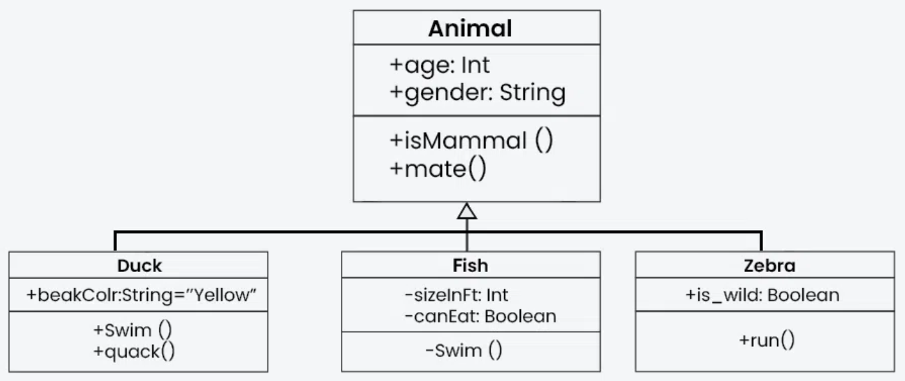
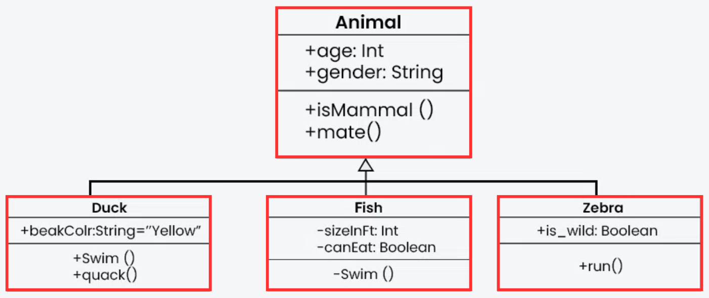
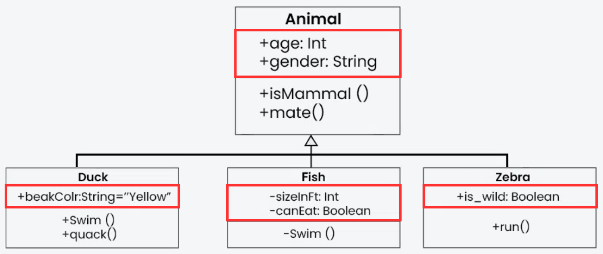
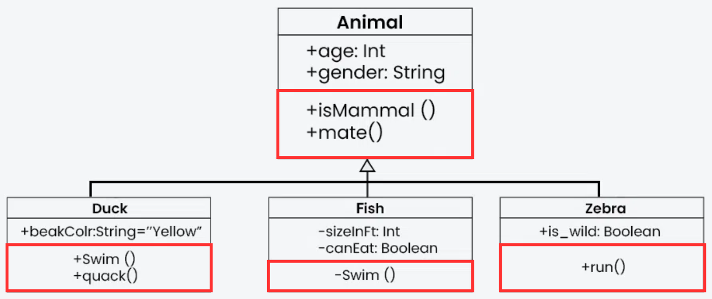
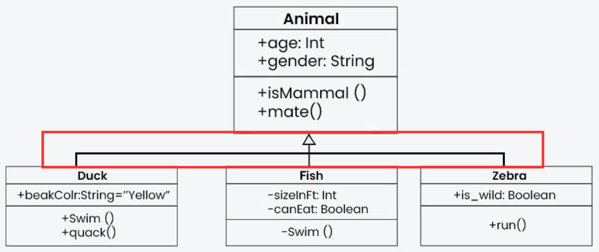

Information Systems Modelling and Design (CN4000_1)
General
Καλώς ήρθατε στο μάθημα Μοντελοποίησης & Σχεδίασης Συστημάτων! Στην τάξη αυτή, θα εξετάσουμε τον κόσμο της UML
(Unified Modeling Language), μιας ισχυρής γλώσσας που χρησιμοποιείται για να απεικονίσουμε το σχέδιο ενός
συστήματος. Η UML μας βοηθά να κατανοήσουμε και να επικοινωνήσουμε καλύτερα τα συστατικά και τη δομή των
λογισμικών συστημάτων μέσω μιας σειράς στάνταρ διαγραμμάτων.
Κατά τη διάρκεια του εξαμήνου, θα καλύψουμε διάφορους τύπους διαγραμμάτων UML, με κάθε τύπο να εξυπηρετεί έναν
συγκεκριμένο σκοπό και να προσφέρει μοναδικές δυνατότητες. Θα μάθουμε να δημιουργούμε διαγράμματα κλάσεων,
διαγράμματα ακολουθίας, διαγράμματα δραστηριοτήτων, και πολλά άλλα, ώστε να μπορέσουμε να αποτυπώσουμε πλήρως τη
δομή και τη λειτουργία ενός συστήματος.
Επιπλέον, η τάξη θα περιλαμβάνει μία μεγάλη εργασία, η οποία θα είναι το επίκεντρο της αξιολόγησης για το
μάθημα. Η εργασία αυτή θα μας ζητήσει να εφαρμόσουμε τις γνώσεις που έχουμε αποκτήσει και να δημιουργήσουμε ένα
πλήρες σύνολο UML διαγραμμάτων για ένα σύστημα της επιλογής μας. Η εργασία αυτή δεν είναι μόνο μια ευκαιρία να
εξασκηθούμε σε όσα μάθαμε, αλλά και να κατανοήσουμε τη σημασία της μοντελοποίησης στη διαδικασία σχεδίασης
λογισμικού.
Ετοιμαστείτε για ένα ταξίδι στον κόσμο της λογισμικής ανάλυσης και σχεδίασης, όπου οι ιδέες σας θα αποκτούν
σχήμα μέσω της UML!
Επανάληψη στη Java
Πριν όμως προχωρήσουμε στην UML, θα πρέπει να βεβαιωθούμε πως είμαστε καλά προετοιμασμένοι και θυμόμαστε
όλα
όσα μάθαμε το προηγούμενο εξάμηνο. Είναι σημαντικό να έχουμε πλήρη κατανόηση των βασικών εννοιών της Java,
καθώς οι δεξιότητες αυτές θα μας βοηθήσουν να κατανοήσουμε καλύτερα την UML και τις εφαρμογές της.
Επομένως, για όποιον αισθάνεται πως δεν θυμάται καλά ή χρειάζεται μια επανάληψη, καλό θα ήταν να ολοκληρώσει τις
επαναληπτικές ασκήσεις που ακολουθούν. Έτσι, θα βεβαιωθεί ότι βρίσκεται σε ένα καλό επίπεδο πριν ξεκινήσει να
μαθαίνει την UML και τα συναφή με αυτήν.
1η Εργασία Επανάληψης
Ολοκλήρωσε το πρώτο σετ ασκήσεων για να ανανεώσεις τις γνώσεις σου στις βασικές έννοιες της Java.
Ξεκίνα τις Ασκήσεις
2η Εργασία Επανάληψης
Εξασκήσου με το δεύτερο σετ ασκήσεων που εστιάζει σε πιο προχωρημένα θέματα.
Ξεκίνα τις Ασκήσεις
Τι είναι τα UML Class Diagrams
Τα διαγράμματα κλάσεων UML είναι ένας οπτικός τρόπος παρουσίασης της δομής και των σχέσεων μεταξύ κλάσεων σε ένα
αντικειμενοστραφές σύστημα (OOP - Object Oriented Programming).

×

Όταν βλέπεις ένα UML Class Diagram για πρώτη φορά, ακολουθείς μια συγκεκριμένη σειρά βημάτων για να το
κατανοήσεις σωστά και να ξέρεις τι να υλοποιήσεις σε κώδικα.
Βήμα 1: Εντοπισμός των Κλάσεων (Classes)

Κοίτα τα κουτιά του διαγράμματος, γιατί το καθένα αντιπροσωπεύει μια κλάση:
- Τι αντικείμενα περιγράφει το διάγραμμα; (π.χ., User, Product, Order κλπ.)
- Ποιες είναι οι κύριες οντότητες του συστήματος;
Σε κώδικα Java: Κάθε κλάση θα γίνει ένα class.
public class User {
// περιεχόμενο...
}
Βήμα 2: Ανάγνωση των Χαρακτηριστικών (Attributes)

Μέσα σε κάθε κλάση, δες τις μεταβλητές που έχει (χαρακτηριστικά/ attributes):
- Ποια είναι τα δεδομένα που αποθηκεύει η κλάση;
- Ποιοι είναι οι τύποι δεδομένων τους (int, String, double κλπ.);
- Ποια είναι η ορατότητα (public, private, protected);
Σε κώδικα Java: Κάθε attribute θα γίνει μια μεταβλητή με το σωστό επίπεδο ορατότητας.
public class User {
private String name;
private int age;
}
- Την ορατότητα (visibility) των χαρακτηριστικών (attributes) και των μεθόδων (methods) προσδιορίζεται από τα
σύμβολα που βρίσκονται μπροστά από το όνομα κάθε στοιχείο
Ποια είναι τα επίπεδα ορατότητας;
| Σύμβολο |
Ορατότητα |
Περιγραφή |
| + |
Public (Δημόσιο) |
Προσβάσιμο από όλες τις κλάσεις. |
| - |
Private (Ιδιωτικό) |
Προσβάσιμο μόνο μέσα στην ίδια κλάση. |
| # |
Protected (Προστατευμένο) |
Προσβάσιμο μόνο από υποκλάσεις (κληρονομικότητα). |
| ~ |
Package (Προστασία Πακέτου) |
Προσβάσιμο μόνο από κλάσεις του ίδιου πακέτου. |
Βήμα 3: Ανάγνωση των Μεθόδων (Methods)

Οι μέθοδοι περιγράφουν τη συμπεριφορά της κλάσης.:
- Ποιες μέθοδοι υπάρχουν;
- Τι ορίσματα δέχονται και τι επιστρέφουν; Ορίσματα (arguments ή parameters), είναι οι τιμές που λαμβάνουν για
να εκτελέσουν κάποια λειτουργία.
- Είναι δημόσιες (+), ιδιωτικές () ή προστατευμένες (#);
Σε κώδικα Java: Οι μέθοδοι θα γίνουν functions μέσα στην κλάση.
public class User {
private String name;
private int age;
public void setName(String newName) {
this.name = newName;
}
public String getName() {
return name;
}
}
Πως ξέρω τι κώδικα θα γράψω μέσα σε μια μέθοδο;
Τα UML διαγράμματα συνήθως δεν δείχνουν τη λειτουργικότητα των μεθόδων, παρά μόνο την δομή τους. Αν και
κάποιες
μεθόδοι με προφανή ονόματα (όπως getName(int name) ) δίνουν μια ιδέα για το τι κάνουν, τις περισσότερες φορές το
διάγραμμα δεν παρέχει πληροφορίες για το πως ακριβώς λειτουργεί μια μέθοδος εσωτερικά. Αυτό σημαίνει ότι η
πραγματική λογική της υλοποίησης παραμένει στον προγραμματιστή.
Βήμα 4: Ανάλυση των Σχέσεων μεταξύ Κλάσεων

Στα UML Class Diagrams, οι σχέσεις μεταξύ κλάσεων δείχνουν πώς συνδέονται και πώς αλληλεπιδρούν μεταξύ τους.
Αυτές οι σχέσεις παριστάνονται με γραμμές και ειδικά σύμβολα που δείχνουν τον τύπο της σχέσης.
Γενικά, υπάρχουν σχέσεις που περιγράφουν:
- Ιδιοκτησία → Μία κλάση περιέχει ή εξαρτάται από μια άλλη.
- Χρήση → Μία κλάση χρησιμοποιεί μια άλλη, αλλά δεν την «κατέχει».
- Κληρονομικότητα → Μία κλάση βασίζεται σε μια άλλη για να αποκτήσει χαρακτηριστικά και μεθόδους.
Ανάλογα με τη σχέση, μπορούμε να καταλάβουμε αν μια κλάση μπορεί να υπάρχει ανεξάρτητα ή αν εξαρτάται από κάποια άλλη.
Παράδειγμα:
- Ένας Χρήστης μπορεί να έχει πολλαπλές Παραγγελίες (ιδιοκτησία).
- Μια Παραγγελία περιέχει Προϊόντα, αλλά αυτά υπάρχουν και χωρίς την παραγγελία (χρήση).
- Ένας Διαχειριστής είναι ειδικός τύπος Χρήστη και κληρονομεί τα χαρακτηριστικά του (κληρονομικότητα).
Σε κώδικα Java:
// Κληρονομικότητα (Inheritance)
public class Admin extends User {
private String role;
}
// Συσχέτιση (Association)
public class Order {
private User customer;
}
Βήμα 5: Υλοποίηση του Κώδικα Βήμα-Βήμα
Τώρα που κατάλαβες τη δομή, μπορείς να ξεκινήσεις να γράφεις τον κώδικα:
- Δημιούργησε τις κλάσεις πρώτα.
- Πρόσθεσε τα attributes με τα σωστά data types.
- Υλοποίησε τις μεθόδους με βάση τα ονόματα και τις επιστροφές τους.
- Πρόσθεσε σχέσεις μεταξύ κλάσεων.